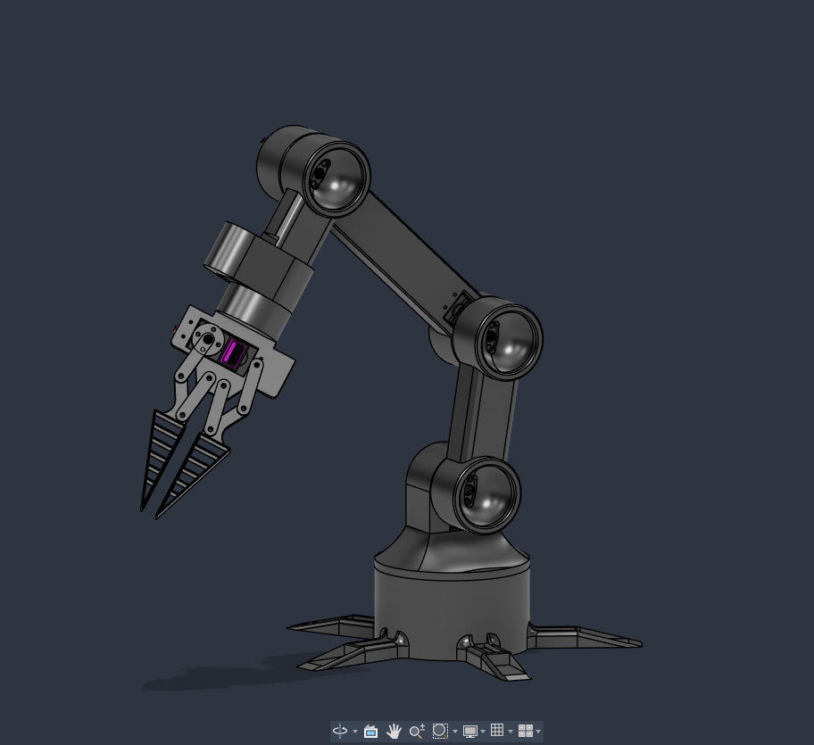
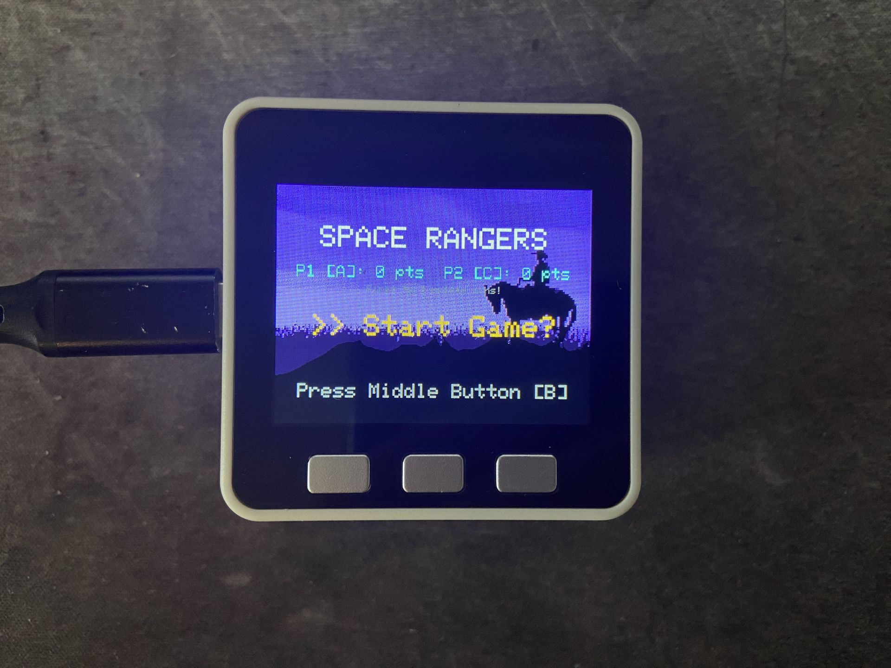
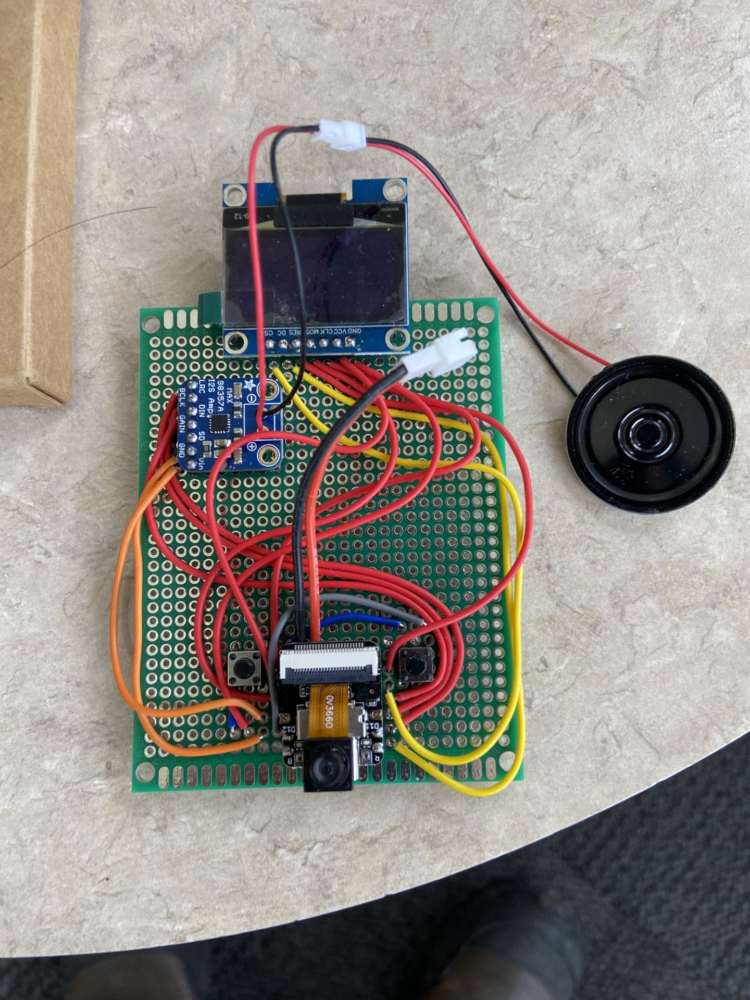
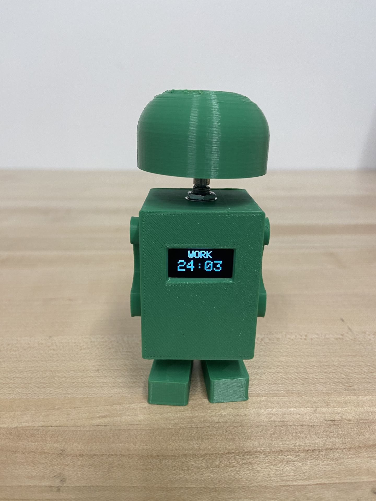
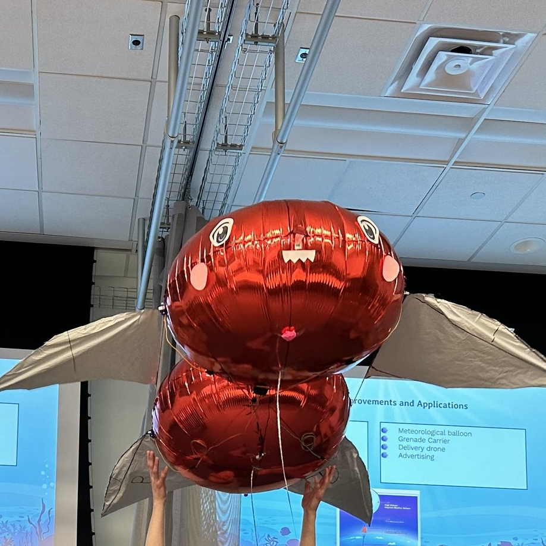
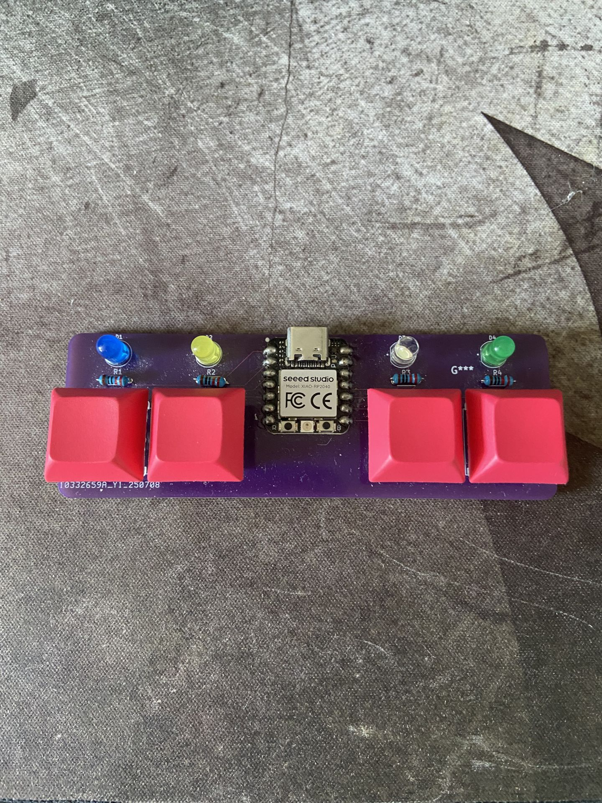
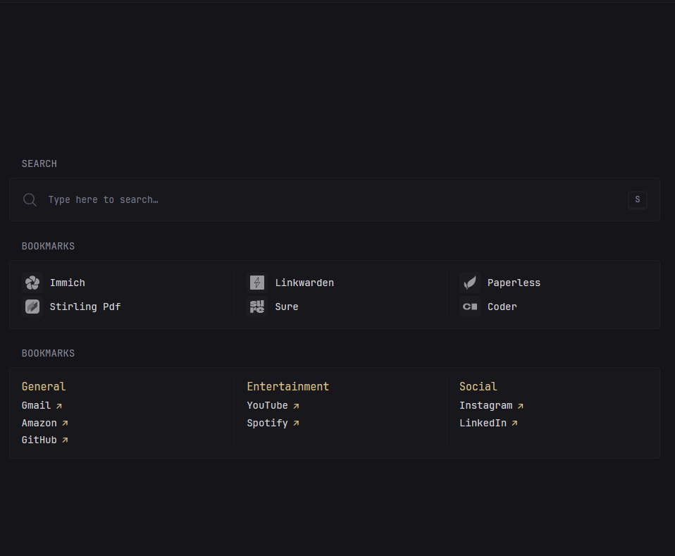

Electrical Engineer
NASA L'SPACE Mission Concept Academy
15-week virtual program through preliminary design review.
Junior · George Mason University
Designing robots, circuit boards, and embedded systems.
Current personal project
A 5-DOF arm for learning kinematics and dynamics. Modeled in Fusion for 3D printing, with Arduino and C++ at the joint level and Python and ROS 2 for pick-and-place and path planning.
View repository
About
I am a junior in the B.S. electrical engineering program at George Mason University. I expect to graduate in December 2028, and my GPA is 3.97. Most of my time goes to robotics, embedded systems, PCB design, and FPGA design in VHDL.
Through August 2026 I was an undergraduate research assistant at the Mason Autonomy and Robotics Center, working on swarm robotics platforms. That summer I was also lead instructor and course developer for GMU ACCESS Academy, a robotics camp for high school students, and a Tech Fellow for CodePath’s Foundations of AI Engineering.
This fall I am treasurer of the IEEE Student Branch at George Mason University and an electrical engineer in NASA L'SPACE Mission Concept Academy, a 15-week virtual program that runs through preliminary design review.
Away from the bench I hike, play guitar, and read science fiction.
I am looking for internships in electrical engineering, robotics, and space.
Experience
NASA L'SPACE Mission Concept Academy
15-week virtual program through preliminary design review.
IEEE Student Branch at George Mason University
–
CodePath
–
GMU ACCESS Academy
Robotics camp for high school students.
–
Mason Autonomy and Robotics Center
Research on swarm robotics platforms.
Projects
Robotics
Designing a 5-DOF arm to learn kinematics and dynamics. The mechanism is modeled in Fusion for 3D printing. Low-level control is Arduino and C++; higher-level tasks such as pick-and-place and path planning use Python and ROS 2.

Embedded
IEEE Student Activities Conference project. Led a team of four, taught GitHub and Copilot basics, and delegated the work by strengths.

Hardware
Hardware paired with a Google Gemini agent, with voice streamed over a WebSocket. MLH best use of MongoDB Atlas (vector search / RAG).
FPGA
Digital system design labs in VHDL on a Basys 3 FPGA.

Robotics
A physical Pomodoro desk robot. Led hardware for a team of five, including a 3D-printed enclosure and a second-accurate timer. The project included a 20-page design report.

Robotics
Led a team of four. A four-fin design was chosen for speed and control, with coding and soldering delegated across the team. Placed second of six teams in presentation and design.

PCB
A high-score reaction game on an RP2040, with a custom KiCad PCB fabricated by JLCPCB. Simulated in Wokwi and built with PlatformIO.

Systems
An image server for about 500 GB of family photos, with Docker running about 14 services. Tailscale and an Nginx reverse proxy provide secure remote access.
Contact
I am looking for internships in those areas. The fastest way to reach me is email.